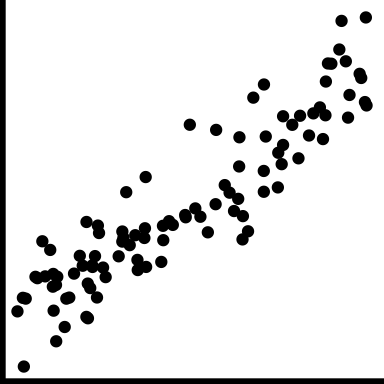

Chapter 5 Bivariate dependencies and relationships
5.1 Motivation
Scatter plots are glorious. Of all the major chart types, they are by far the most powerful. They allow us to .monash-orange2[quickly understand relationships] that would be nearly impossible to recognize in a table or a different type of chart. … Michael Friendly and Daniel Denis, psychologists and historians of graphics, call the scatter plot the most “generally useful invention in the history of statistical graphics.” Dan Kopf
Scatterplots are the natural plot to make to explore association between two continuous (quantitative or numeric) variables].
They are not just for linear relationships but are useful for examining nonlinear patterns, clustering and outliers.
We also can think about scatterplots in terms of statistical distributions: if a histogram shows a marginal distribution, a scatterplot allows us to examine the bivariate distribution of a sample.
5.1.1 History
Descartes provided the Cartesian coordinate system in the 17\(^{th}\) century, with perpendicular lines indicating two axes.
It wasn’t until 1832 that the scatterplot appeared, when John Frederick Herschel (Friendly and Denis 2001) plotted position and time of double stars. This is 50 years after bar charts and line charts appeared, used in the work of William Playfair to examine economic data. Kopf argues that The scatter plot, by contrast, proved more useful for scientists, but it clearly is useful for economics today.
5.1.2 Language and terminology
The words “correlation” and “association” are NOT interchangeable. In the English language correlation means a mutual relationship or connection between two things. However, the statistic called correlation ONLY describes linear relationships.
If the relationship is NOT linear, call use the term association to describe it. Use the term correlated only for linear relationships to avoid confusion related to the statistic.]
5.2 Common features and their names
| Feature | Example | Description |
|---|---|---|
| positive trend | Low value corresponds to low value, and high to high. | |
| negative trend | Low value corresponds to high value, and high to low. | |
| no trend | No relationship | |
| strong |

|
Very little variation around the trend |
| moderate |

|
Variation around the trend is almost as much as the trend |
| weak |

|
A lot of variation making it hard to see any trend |
| linear form |  | The shape is linear |
| nonlinear form |

|
The shape is more of a curve |
| nonlinear form |

|
The shape is more of a curve |
| outliers | There are one or more points that do not fit the pattern on the others | |
| clusters | The observations group into multiple clumps | |
| gaps |

|
There is a gap, or gaps, but its not clumped |
| barrier | There is combination of the variables which appears impossible | |
| l-shape |

|
When one variable changes the other is approximately constant |
| discreteness |

|
Relationship between two variables is different from the overall, and observations are in a striped pattern |
| heteroskedastic |

|
Variation is different in different areas, maybe depends on value of x variable |
| weighted |

|
If observations have an associated weight, reflect in scatterplot, e.g. bubble chart |
- Weighted doesn’t fit structure table, but its there to remind us not to forget about weighted data
- causation: one variable has a direct influence on the other variable, in some way. For example, people who are taller tend to weigh more. The dependent variable is conventionally on the y axis. It’s not generally possible to tell from the plot that the relationship is causal, which typically needs to be argued from other sources of information.
- association: variables may be related to one another, but through a different variable, eg ice cream sales are positively correlated with beach drownings, is most likely a temperature relationship.
- conditional relationships: the relationship between variables is conditionally dependent on another, such as income against age likely has a different relationship depending on retired or not.
5.2.1 Anscombe’s quartet

All four sets of Anscombe has .monash-orange2[same means, standard deviations and correlations], \(\bar{x}\) = 9, \(\bar{y}\) = 7.5, \(s_x\) = 3.3, \(s_y\) = 2, \(r\) = 0.82.
5.2.2 DatasauRus dozen

All 13 sets of the datasaurus dozen have .monash-orange2[same means, standard deviations and correlations], \(\bar{x}\) = 54, \(\bar{y}\) = 48, \(s_x\) = 17, \(s_y\) = 27, \(r\) = -0.06.
5.3 Case study 1: olympics
## Rows: 10,384
## Columns: 14
## $ Name <fct> Lamusi A, A G Kruger, Jamale Aarrass, Abdelhak Aatakni, Maria …
## $ Country <fct> "People's Republic of China", "United States of America", "Fra…
## $ Age <int> 23, 33, 30, 24, 26, 27, 30, 23, 27, 19, 37, 28, 28, 28, 22, 19…
## $ Height <dbl> 1.70, 1.93, 1.87, NA, 1.78, 1.82, 1.82, 1.87, 1.90, 1.70, NA, …
## $ Weight <int> 60, 125, 76, NA, 85, 80, 73, 75, 80, NA, NA, NA, 60, 64, 62, N…
## $ Sex <fct> M, M, M, M, F, M, F, M, M, M, M, M, F, F, M, F, M, M, M, M, F,…
## $ DOB <date> 1989-02-06, NA, NA, 1988-09-02, NA, 1984-06-09, NA, 1989-03-0…
## $ PlaceOB <fct> "NEIMONGGOL (CHN)", "Sheldon (USA)", "BEZONS (FRA)", "AIN SEBA…
## $ Gold <int> 0, 0, 0, 0, 0, 0, 0, 0, 0, 0, 0, 0, 0, 0, 0, 0, 0, 0, 0, 0, 0,…
## $ Silver <int> 0, 0, 0, 0, 0, 0, 0, 0, 0, 0, 0, 0, 0, 0, 0, 0, 0, 0, 0, 0, 0,…
## $ Bronze <int> 0, 0, 0, 0, 0, 0, 0, 0, 0, 0, 0, 0, 0, 0, 0, 0, 0, 0, 0, 0, 0,…
## $ Total <int> 0, 0, 0, 0, 0, 0, 0, 0, 0, 0, 0, 0, 0, 0, 0, 0, 0, 0, 0, 0, 0,…
## $ Sport <fct> "Judo", "Athletics", "Athletics", "Boxing", "Athletics", "Hand…
## $ Event <fct> "Men's -60kg", "Men's Hammer Throw", "Men's 1500m", "Men's Lig…
Warning message: Removed 1346 rows containing missing values (geom_point)- The expected linear relationship between height and weight is visible, although obscured by outliers.
- Some discretization of heights, and higher weight values.
- Likely to be substantial overplotting (57 athletes 1.7m, 60kg can’t tell this from this plot).
- Note the unusual height-weight combinations. What sport(s) would you expect some of these athletes might be participating in?
Your turn, cut and paste the code into your R console, and mouse over the resulting plot to examine the sport of the athlete.
library(tidyverse)
library(plotly)
data(oly12, package = "VGAMdata")
p <- ggplot(oly12, aes(x=Height, y=Weight, label=Sport)) +
geom_point()
ggplotly(p) 5.3.1 How many athletes in the different sports?
| Sport | n |
|---|---|
| Athletics | 2120 |
| Swimming | 907 |
| Football | 596 |
| Rowing | 524 |
| Cycling | 489 |
| Hockey | 416 |
| Judo | 368 |
| Shooting | 368 |
| Sailing | 360 |
| Wrestling | 324 |
| Handball | 319 |
| Gymnastics | 274 |
| Boxing | 272 |
| Volleyball | 271 |
| Basketball | 269 |
| Water Polo | 249 |
| Weightlifting | 243 |
| Fencing | 235 |
| Canoe Sprint | 232 |
| Equestrian | 191 |
| Table Tennis | 167 |
| Tennis | 167 |
| Badminton | 166 |
| Diving | 133 |
| Taekwondo | 126 |
| Archery | 121 |
| Triathlon | 103 |
| Synchronised Swimming | 101 |
| Beach Volleyball | 93 |
| Canoe Slalom | 80 |
| Modern Pentathlon | 69 |
| Trampoline | 31 |
5.3.2 Consolidate factor levels
There are several cycling events that are reasonable to combine into one category. Similarly for gymnastics and athletics.
oly12 <- oly12 %>%
mutate(Sport = as.character(Sport)) %>%
mutate(Sport = ifelse(grepl("Cycling", Sport), #<<
"Cycling", Sport)) %>% #<<
mutate(Sport = ifelse(grepl("Gymnastics", Sport),
"Gymnastics", Sport)) %>%
mutate(Sport = ifelse(grepl("Athletics", Sport),
"Athletics", Sport)) %>%
mutate(Sport = as.factor(Sport))5.3.3 Split by sport

Note: alpha transparency, and aspect ratio
- Some sports have no data for height, weight
- The positive association between height and weight is visible across sports
- Nonlinear in wrestling?
- An outlier in judo, and football, and archery
- Maybe flatter among swimmers
- Taller in basketball, volleyball and handball
- Shorter in athletics, weightlifting and wrestling
- Little variance in tennis players
- It’s still messy, and hard to digest
Things to do to make comparisons easier:
- Remove sports with missings
- Make regression lines for remaining sports on one plot
- Separately examine male/female athletes
- Compare just one group against the rest
5.3.4 Remove missings, add colour for sex
Note: Because the focus is now on males vs females association shape within sport, make plots scale separately.
- Athletics category should have been broken into several more categories like track, field: a shot-putter has a very different physique to a sprinter.
- Generally, clustering of male/female athletes
- Outliers: a tall skinny male archer, a medium height very light female athletics athlete, tall light female weightlifter, tall light male volleyballer
- Canoe slalom athletes, divers, cyclists are tiny.
5.3.5 Comparing association
## `geom_smooth()` using formula 'y ~ x'
- Weightlifters are much heavier relative to height
- Swimmers are leaner relative to height
- Tennis players are a bit mixed, shorter tend to be heavier, taller tend to be lighter
5.3.6 Comparing variability

- Modern pentathlon athletes are uniformly height and weight related
- Shooters are quite varied in body type
5.3.7 Summary
We have seen that the association between height and weight is “contaminated” by different variables, sport, gender, and possibly country and age, too.
Some of the categories also are “contaminated,” for example, “Athletics” is masking many different types of events. This lurking variable probably contributes to different relationships depending on the event. There is another variable in the data set called Event. Athletics could be further divided based on key words in this variable.
If you were just given the Height and Weight in this data could you have detected the presence of conditional relationships? Can you see the conditional dependencies?
There is a hint of multimodality, barely a hint. It’s not easy to detect the presence of the additional variable, and thus accurately describe the relationship between height and weight among Olympic athletes.
5.3.8 Scatterplot modifications and purpose
| Modification | Example | Purpose |
|---|---|---|
| none |

|
raw information |
| alpha-blend | alleviate overplotting to examine density at centre | |
| model overlay |

|
focus on the trend |
| model + data |

|
trend plus variation |
| density | overall distribution, variation and clustering | |
| filled density | high density locations in distribution (modes), variation and clustering | |
| colour | relationship with conditioning and lurking variables | |
| colour + density |

|
relationship with conditioning and lurking variables |
About the Olympics 2012 data
- What can this data be used for?
- What’s the population?
- What could be informed by what is learned from this sample?
5.4 Case study 2: movies
5.5 Case study 3: cars
5.6 Case study 4: soils
5.7 Case study 5: COVID
5.8 Checking association with permutations
transformations to linearise
5.9 Exercises
- For each of the following scatterplots, of different Olympic athlete’s height and weight identify the visible features, and which is the most surprising.

Guess the correlation between the two variables in each of the previous scatterplots.
From the following scatterplot, of diamond size and price, what are the most prominent features?

- In the previous plot of diamonds, what transformation would be recommended based on the “circle of transformations?”
- In the following plot of arrival delay and departure delay of flights into and out of the New York City area, what are the most prominent features?

- Which of these would be a surprising feature learned from this plot? Why?
- There are negative departure and arrival delays
- If a flight has a delay in departure it likely will be delayed on arrival
- Some flights with negative departure delay have long arrival delays
- Some flights have long delays
- Some flights with negative arrival delays have positive departure delays
- A dominant feature in the plot of average rating by number of ratings of movies in the IMDB database is a barrier, or two barriers, both top and bottom of plot. What is a plausible explanation for this feature?
- As movies become more popular ratings invariably go down
- There are just very few frequently rated movies and this means it is unlikely to see high values.
- The lesser rated movies have a lot of variance in their ratings, producing a barrier for the more frequently rated movies.
- The lesser rated movies have a lot of variance in their ratings, producing a barrier for the more frequently rated movies.
- The average of many values tends to be unlikely to be at the highest and lowest possible values.